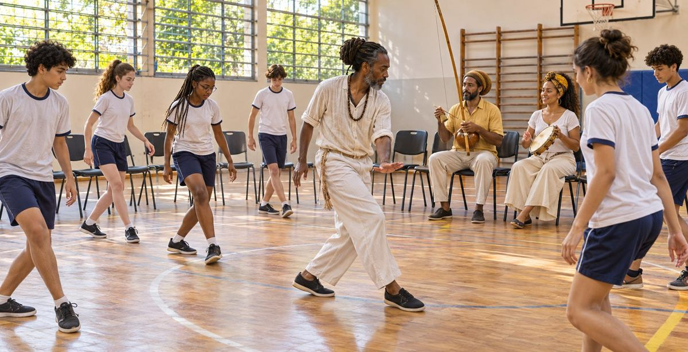

Mathematics and science
Count repeating rhythms, map positions, measure distances, and investigate balance. Use drawings and manipulatives when movement does not suit the learner.

Rooted in Wisdom. Rising in Purpose.
Our only planned school sport · A schoolwide cultural thread
Aberewa’s developing program draws inspiration from Mestre Curtis Pierre’s Capoeira Angola work in New Orleans. It connects supervised physical practice with music, cultural learning, and meaningful participation throughout school life.
Development-stage plan: the school is not yet open. Classes, guest visits, staffing, and facilities must be confirmed before activities begin.

Casa Samba describes an approach that develops fluid movement, stamina, balance, and flexibility. His educational workshops also bring movement together with music and cultural history. Aberewa proposes to carry these connections into its own teaching and community life.
These are educational influences, not a claim that Mestre Curtis Pierre or Casa Samba has endorsed, staffed, or partnered with Aberewa. Instructor appointments and guest appearances will be announced when confirmed.
Source: Casa Samba’s description of Mestre Curtis’ classes · Source: Mestre Curtis’ educational programs
Our program in pictures
These AI-generated concept images show fictional participants and proposed activities. They are not photographs of enrolled students, operating classes, confirmed uniforms, or Mestre Curtis Pierre.
Listen · Rhythm · Capoeira Angola
Play the album here and use the player’s playlist menu to choose a track.
Listen to the album on YouTube Music
If a track cannot play in the embedded player, use the YouTube Music link above.
Count repeating rhythms, map positions, measure distances, and investigate balance. Use drawings and manipulatives when movement does not suit the learner.
Read attributed accounts, explore oral tradition, and study Afro-Brazilian cultural history. Keep Akan and Afro-Brazilian traditions distinct while exploring diasporic connections.
Explore instruments, listening, call-and-response, and movement drawing. Practice taking turns and giving a partner space. These classroom applications are Aberewa’s plans.
Plan predictable routines, visual demonstrations, communication supports, quiet breaks, and individually appropriate movement. Students may participate seated, observe, draw, or explore rhythm. Staff will work with families and student support plans; academic assessment remains tied to the academic learning target.
Movement instruction will be supervised by qualified personnel in an appropriate space. Partners should have room to move; contact, advanced movements, and physical demands must not be improvised from a website image.
Capoeira Angola will be Aberewa’s only planned school sport. Team members will have identifiable Capoeira Angola training uniforms. Final design, sizing, costs, and assistance arrangements will be shared before participation decisions.
The school plans free adult classes after school and visits from guest teachers. Times, instructors, registration, supervision, and access arrangements will be published when confirmed. Adult sessions will have separate registration and supervision arrangements from student activities.
Help develop accessible practice space, instruments, training clothing, and qualified instruction for student and community learning.
Support Capoeira Angola via Cash AppThis is the same school Cash App account used elsewhere on the site, not a separate restricted fund. Aberewa does not currently have federal 501(c)(3) recognition; contributions are not represented as tax-deductible.